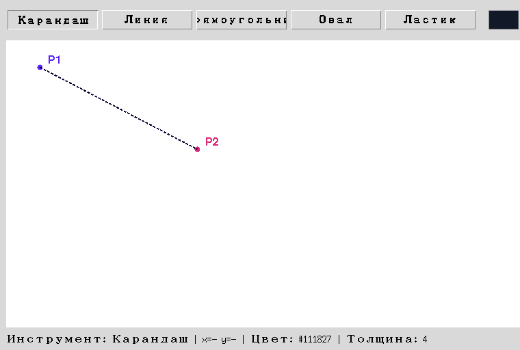

Глава 18 · Canvas по-настоящему
Система координат Canvas
Левый верхний угол — начало координат. X растёт вправо, Y — вниз. Не как у Turtle.
Координаты растут вправо и вниз
У Canvas точка (0, 0) — левый верхний угол. Первая координата
(X) растёт вправо, вторая (Y) — вниз. Любая фигура задаётся через точки в этой системе:

Turtle vs Canvas — сравним в лоб
Если до этой главы вы рисовали Turtle (главы 6–7), интуиция может подвести: там начало координат — центр экрана, а Y растёт вверх, как в математике на бумаге. У Canvas — иначе, и это не «более правильная» или «менее правильная» система, а просто другое соглашение, которое Tkinter унаследовал от оконных систем, где строки экрана нумеруются сверху вниз.
Canvas (Tkinter)
Turtle (главы 6–7)
event.x / event.y — те же координаты, что и у самого Canvas
Координаты события мыши (глава 17 —
event.x, event.y) и координаты, которые принимает create_*, — одна и та же система: пиксели относительно левого верхнего угла холста. Именно поэтому canvas.create_line(start_x, start_y, event.x, event.y) работает без какого-либо пересчёта.Практика: координаты Canvas
Автоматическая проверка — определяем координаты точек и границы фигур по описанию жеста